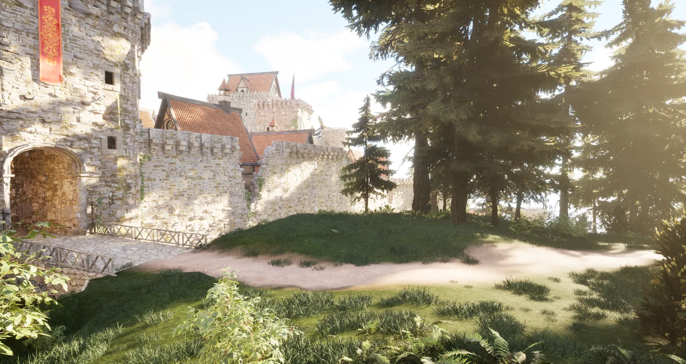
Tetra (working title)
At a Glance
Tetra is an adventure game set in the forested coastal mountains, currently being designed and developed by me. This page is living: as the game grows and evolves, so will this page.
Procedural Content Generation
My obsession lately has been PCG. It's an incredibly useful tool for building beautiful, natural-looking environments that are optimized for gameplay. I'm inspired by nature and lucky to be surrounded by it, and my goal is to replicate the forests around my home in the Pacific Northwest as closely as possible with PCG.
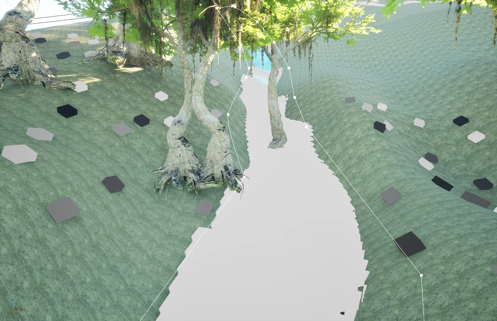
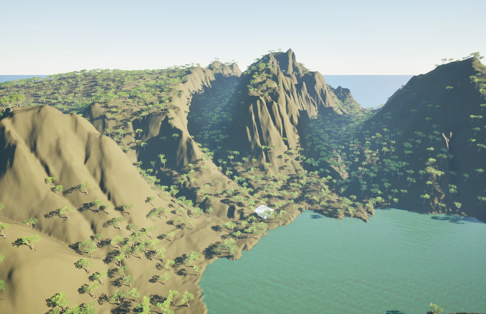
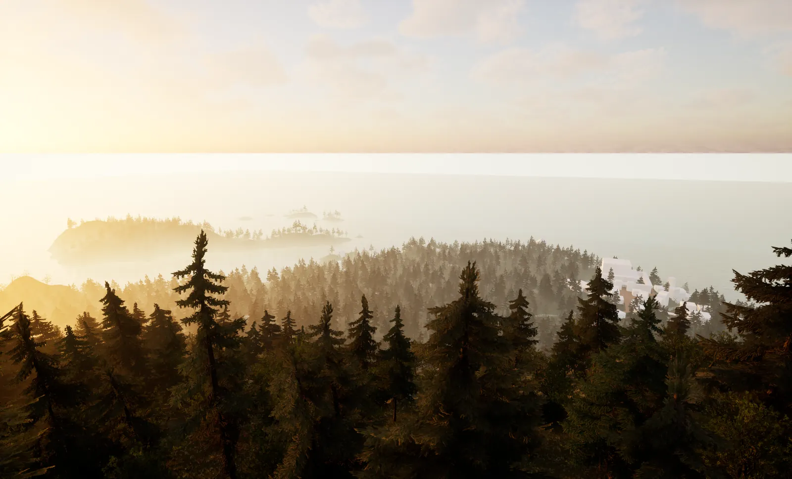
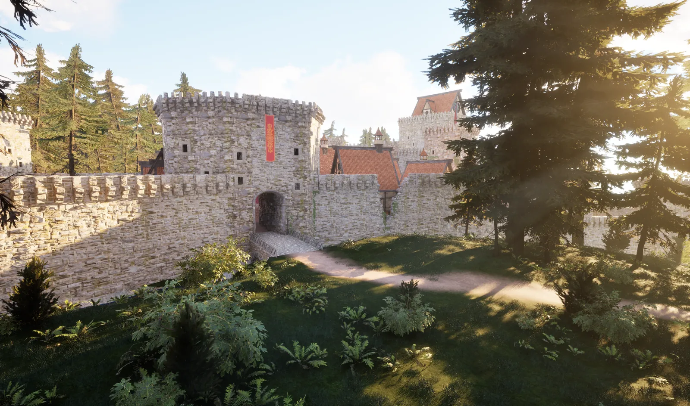
Optimization
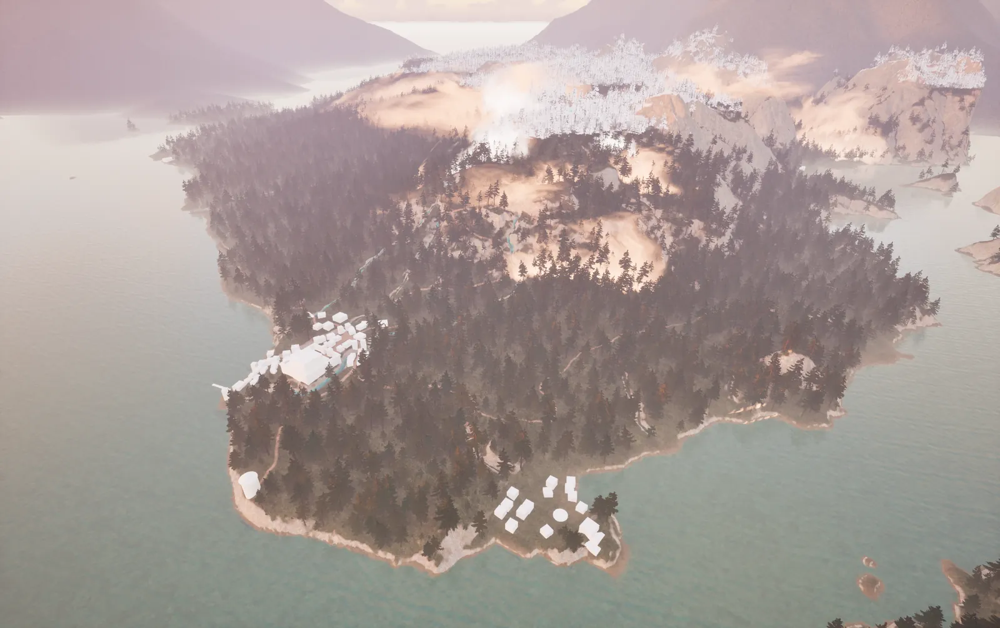
Originally I thought I needed to spawn every point across the entire 2 km × 2 km map. To improve performance, I added distance culling to the static mesh spawners so foliage only spawns around the player up to a set distance; the bigger the asset, the farther away it stays visible. I'm also taking advantage of Nanite so meshes look great at all distances without much performance cost.
To keep paths clear, I use splines and tags: the PCG graph takes the spline data, runs it through a bounds modifier, and sends it to a difference node, removing anything within the bounds along the spline.
Level Design
The map is 2 km × 2 km, made with a heightmap generator and real-world data from the coastal mountains of British Columbia.
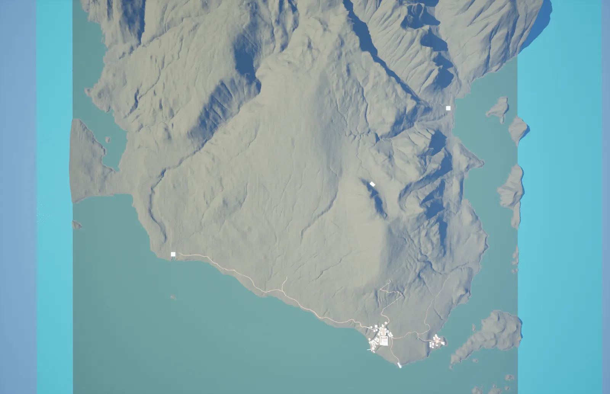
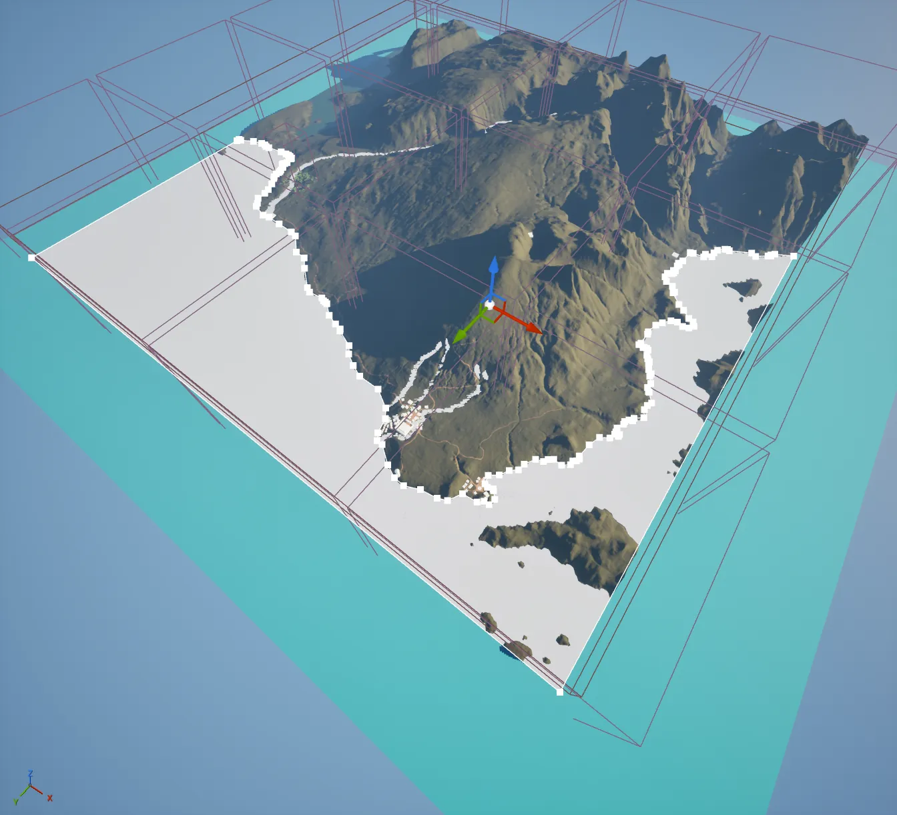
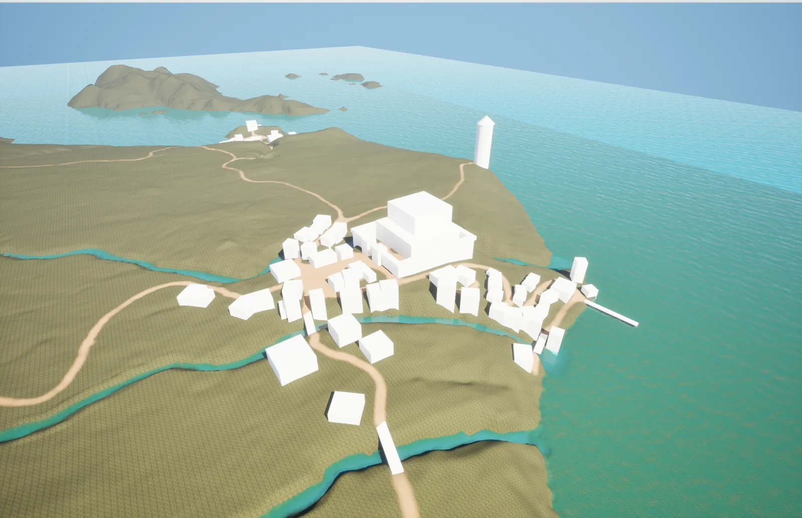
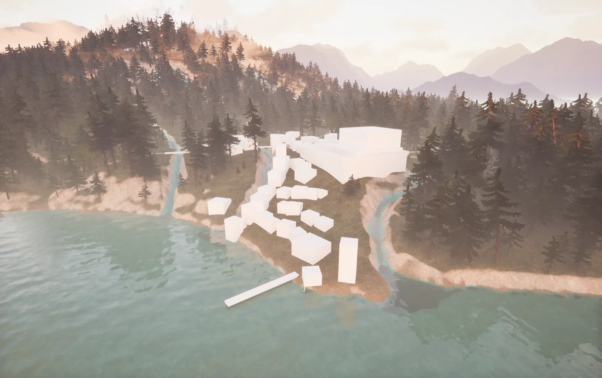
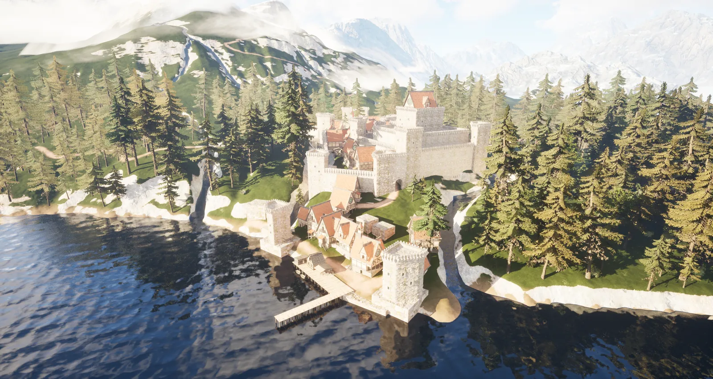
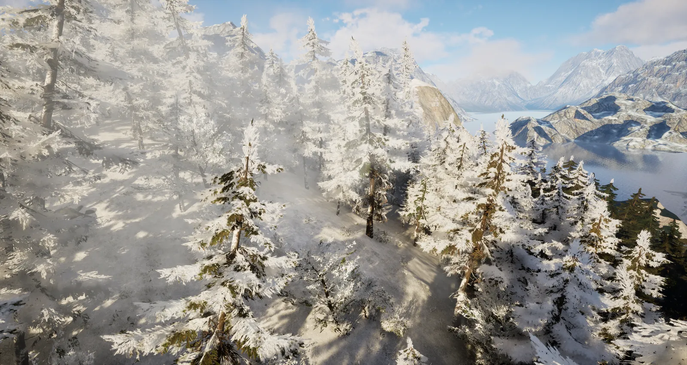
I added snow and fog using William Faucher's EasySnow and EasyFog, with snow set to start above a certain height.